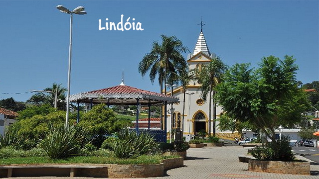
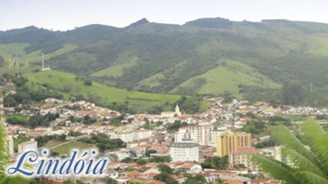
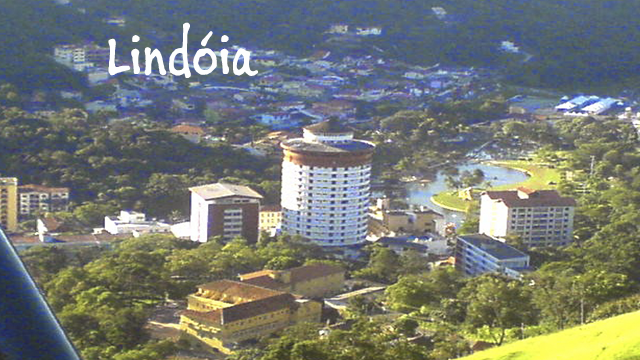
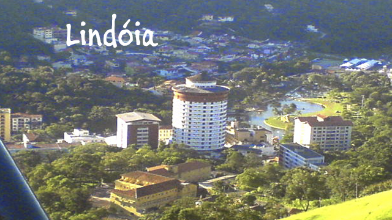
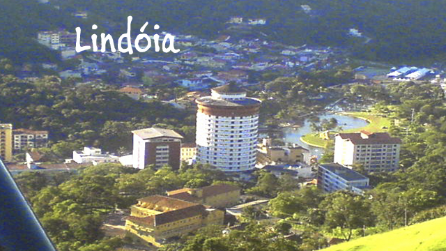

Fotos da cidade de Lindóia
  

Localizada no coração do circuito das Águas Paulista, A Estância Hidromineral de Lindóia é considerada a "Capital da Água Mineral", de onde é extraído um volume de 40% da água mineral consumida no Brasil.
Além dessa riqueza natural, está cercada pela beleza da Serra da Mantiqueira, com sua vegetação exuberante e o Rio do Peixe que passa ao longo do município, com trechos de cachoeiras, compondo um cenário de extraordinária beleza natural.
Tem como sua principal atração o Grande Lago, lugar perfeito para o ecoturismo e o turismo de esporte e lazer.
